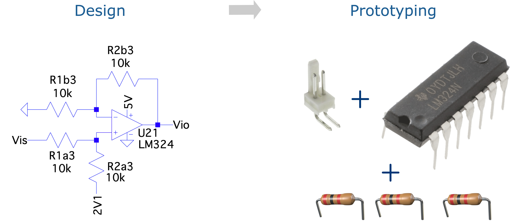
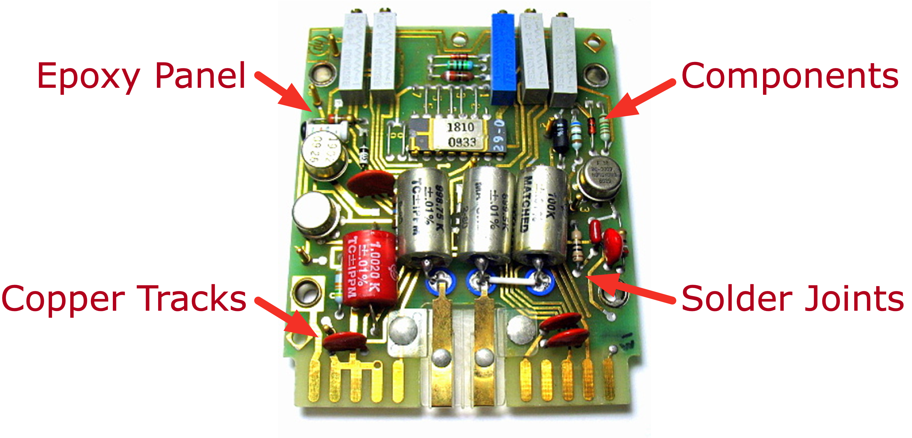
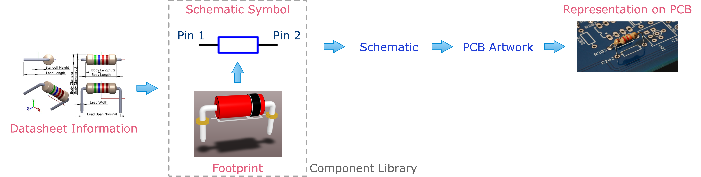
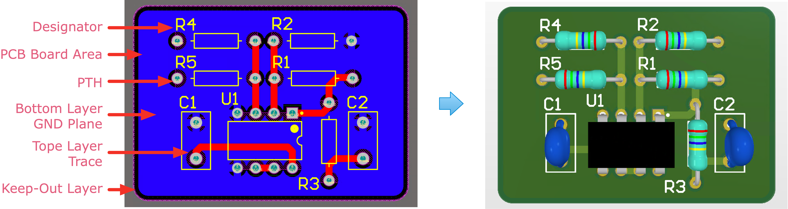
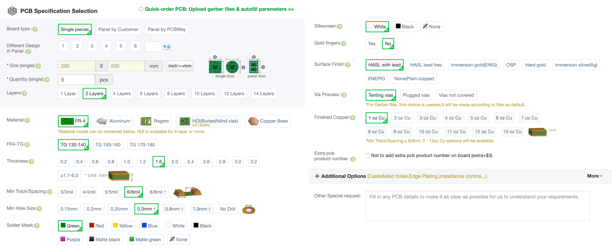
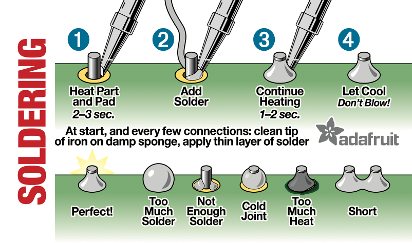

class: title-slide count: false .logo-title[] ## ELECTENG 209 # Electronics Systems Design ### Introduction to Prototyping .TitleAuthor[Duleepa J Thrimawithana] --- layout: true name: template_slide .logo-slide[] .footer[[Duleepa J Thrimawithana](https://www.linkedin.com/in/duleepajt), Department of Electrical, Computer and Software Engineering (2020)] --- name: S1a # Learning Objectives - Understanding the product development life cycle - Techniques that can be used to develop a quick prototype for design validation - The evolution of circuit assembly technologies - Printed circuit board (PCB) terminology - PCB development process - Schematic symbols - Footprints - Schematic capture - PCB artwork - PCB design consideration - PCB manufacturing process - Testing and validating --- name: S1b # Lecture Quiz - The lecture quiz is now available on Canvas - Quiz is available for 3 days and allows 3 attempts - Best of the 3 attempts taken as the final score --- class: title-slide layout: false count: false .logo-title[] # Product Development ### Understanding the Product Development Life Cycle --- layout: true name: template_slide .logo-slide[] .footer[[Duleepa J Thrimawithana](https://www.linkedin.com/in/duleepajt), Department of Electrical, Computer and Software Engineering (2020)] --- name: S2 # Product Development Life Cycle - Concept and requirements (in EE209 these are given) - Starts with an idea which can be turned into a product - Requirement gathering, develop specifications and develop a conceptual design - Detailed design - Background research to identify applicable prior art, resources and technologies - Define the problem, subdivide and then analyse feasible solutions using theory and simulation tools - Based on the findings develop a detailed solution for test and validation - Test and validate solution - Through simulations and prototype implementations - Fast tracked using Breadboards, Veroboards, dev kits, PCBs and rapid prototyping tools - Manufacturing and quality testing - Plan manufacturing, setup procurement processes, build, quality test and sell - After sales support and services to repair faults, maintenance and technical support --- class: title-slide layout: false count: false .logo-title[] # Circuit Assembly ### A Review of Technologies --- layout: true name: template_slide .logo-slide[] .footer[[Duleepa J Thrimawithana](https://www.linkedin.com/in/duleepajt), Department of Electrical, Computer and Software Engineering (2020)] --- name: S3 # What to Do After Simulating the Design? - After proving your electronics design is feasible using theory and simulations, a prototype needs to be built to experimentally validate its functionality - In real life you will iterate through many prototypes to refine the design so that it can be manufactured reliably at scale - How can we interconnect the electronic components needed to build a prototype? - For example, in your project, how can we connect the resistors to OpAmp to test functionality? .center[] --- name: S4 # Quick Prototyping .center[<img src="img/QuickProto.png" height="200">] - Breadboards are used to temporarily assemble simple designs for quick testing and validation - Could be parts of a design that needs quick validation - Only useful when testing low voltage, low current and low frequency designs - Veroboards are used to permanently assemble simple designs for quick testing and validation - Could be parts of a design that needs quick validation - Offer better reliability than a breadboard - Need to ensure components and connections are laid out neatly --- name: S5 # Circuit Assembly Technology in the '60s .center[<img src="img/Assembly60s.png" height="230">] - Rather large through-hole (leaded) components were used - The components were connected by soldering wires between leads - Components are mechanically fixed to a non-conducting base plate - Bulky designs that are tedious to manufacture - Require manual labour --- name: S6 # Circuit Assembly Technology in the '80s .center[] - Printed circuit boards (PCBs) were used to assemble mainly through-hole devices - Surface mount technology starts to gain acceptance - Copper tracks laid out on a board, which was made from epoxy, made interconnections between components that were soldered using a Lead alloy - These copper tracks were printed on the epoxy mostly using chemical etching techniques - Maturing component technology allowed compact components --- name: S7 # Circuit Assembly in Present Day (PI) .center[<img src="img/Assembly20s.png" height="230">] - Multilayer printed circuit boards (PCBs) used to assemble mainly surface mount devices (SMD) - Dimensions of surface mount devices can be as small as a few hundred micro-meters - Surface mount technology (SMT) allows automated manufacturing and compact designs - Solder paste dispensing, device placement and soldering done by robots - Todays pick-and-place machines can place thousands of components per minute --- name: S8 # Circuit Assembly in Present Day (PII) .center[ <iframe width="728" height="409.5" src="https://www.youtube-nocookie.com/embed/HRvADApuyzA?start=20" frameborder="0" allow="accelerometer; autoplay; encrypted-media; gyroscope; picture-in-picture"></iframe> ] --- class: title-slide layout: false count: false .logo-title[] # Printed Circuit Board Design ### Understanding the Fundamentals --- layout: true name: template_slide .logo-slide[] .footer[[Duleepa J Thrimawithana](https://www.linkedin.com/in/duleepajt), Department of Electrical, Computer and Software Engineering (2020)] --- name: S9 # The Terminology .center[<img src="img/Terminology.png" height="180">] - **Leads (pins)** of through-hole devices are inserted in to **holes** and the copper **pads** around these holes provides a surface to solder the leads - A **2-layer** PCB consists of an epoxy panel made from **FR4** with copper **traces (tracks)** on both top and bottom sides allowing to make electrical connections between the leads of the devices - **Plated through-hole (PTH)** technology ensures pads on top and bottom are electrically connected - **Solder mask** is a non-conducting paint that protects the copper while making soldering easier - **Silk screen** contains the writing on the board like **designators**, logos, information, etc. --- name: S10 # PCB Design Step 1 - Component Library .center[] - First, develop a component library containing schematic symbols and footprints for each device - Schematic symbols are used to represent the devices in a schematic file - Drawn according to international standards such as the IEC60617 - Footprints tell how devices are physical represented on a PCB - Includes information taken from the datasheet regarding the placement and dimensions of holes and pads, association of pads with physical pins of the device, 2D outline, 3D body, etc. - Each schematic symbol needs to be associated with a corresponding footprint --- name: S11 # PCB Design Step 2 - Schematic File .center[<img src="img/EE209Sample.png" height="190">] - Once the component library is setup, we can develop the schematic of our circuit showing the electrical connectivity between the devices - Layout the schematic a logical manner while observing conventions - Use net labels/ports where needed to reduce clutter - Separate functional blocks of your circuit - To improve readability add annotations - Complex designs often spans across multiple schematic sheets --- name: S12 # PCB Design Step 3 - PCB Artwork - After drawing the schematic, the PCB artwork can be developed by drawing Cu traces to make electrical connections between devices - Planes/pours can also be used to create solid Cu planes for electrical connections - Before starting the artwork, setup the design rules as per manufacturing and assembly constraints - Arrangement of devices is very important and is key to doing a good PCB design - Traces can be placed using **‘interactive routing tool’** on **top (red)** and **bottom (blue)** layers .center[] --- name: S13 # PCB Design Step 4 - Manufacturing the PCB - After completing the PCB design check compliance with manufacturing and assembly constraints using **'Design Rule Check'** you should also do a **visual check** by printing it (use 1:1 scale) - Finally, generate outputs and send for manufacturing - PCBs are mainly manufactured through an etching process (and in same cases they are routed) - After drilling the PCB, holes are plated with Cu and finally the solder mask and silk screen added .center[<img src="img/PCBEtching.png" height="250">] --- name: S14 # Example: PCB Order Through PCBWay .questions[ Discuss what you will have to specify to the PCB manufacturer if you were to get your PCB design manufactured through [PCBWay](https://www.pcbway.com). ] .center[] --- name: S15 # PCB Design Considerations - Arrangement of components is critical - MCU pins in use, allocation of Op-Amps, etc. need to be selected to help achieve a good design - Arrange in to functional blocks for example digital, power, signal conditioning, etc. - Use appropriate track widths and clearances and for your UG projects use - Track widths of at least 0.5mm - Clearances of at least 0.5mm between tracks and 1mm between tracks and plane - Minimize parasitic effects - Longer track introduces unwanted inductances and will pickup noise - Avoid sharp corners and use shortest path for traces - Use effective ground planes - Allow sufficient clearance between components - Allow space for connectors, mountings, heat-sinks, etc. - Make sure test points are accessible --- name: S16 # Example: TH vs SMT .questions[ Discuss the differences between TH and SMT designs. What are **vias** and what are they used for? ] .center[<img src="img/EgPCB.png" height="300">] --- name: S17 # ECSE Student Designs .center[<img src="img/IBMC.png" height="350">] --- name: S18 # ECSE Student Designs .center[<img src="img/B1.png" height="400"> ] --- class: title-slide layout: false count: false .logo-title[] # PCB Assembly (PCBA) ### Assembly, Test & Validation --- layout: true name: template_slide .logo-slide[] .footer[[Duleepa J Thrimawithana](https://www.linkedin.com/in/duleepajt), Department of Electrical, Computer and Software Engineering (2020)] --- name: S19 # Guide to Assembling & Testing - Devices may be assembled by hand or using semi/fully automated machines - In this project you are required to assemble by hand - ECSE department has a state of the art SMT prototyping facility (tours can be arranged) - Before assembling, develop test strategies that can be used to validate the design - Assemble the circuit in stages while testing as per your test strategies - Assemble, test and validate each functional block independently where possible - After validating each function block of the circuit then interconnecting these to step-by-step while validating each step - In this course, assemble and test power supply first, then assemble and test level-shifters, afterwards the filters and finally test the entire design - Do not ever assemble the entire circuit and expect it to work the first time - Even the most experienced engineers assemble the first prototype in stages while validating each stage before proceeding to the next --- name: S20 # Soldering Instructions - Getting Ready .left-column[ - Health and safety is the first priority - Wear safety glasses and clean your hands after soldering - Always solder in a well-ventilated and well-lit space - Pay full attention when using hot tools - Find a suitable soldering iron and select your solder wire - Soldering iron tip should be correct size and in good condition - If soldering SMT devices, you can use solder paste and a hot air-gun/reflow oven - It is recommended to use Leaded solder when performing manual soldering - Unleaded solder was introduced to meet requirements of the Removal of Hazardous Substances (ROHS) directive, and is harder to use ] .right-column[ .center[<img src="https://i1.wp.com/goleman.co.nz/wp-content/uploads/2020/08/E4000_Xspex_Clear_01.jpg?fit=1500%2C850&ssl=1.png" width="250"> ] .center[<img src="http://www.ifirst.co.nz/image/cache/data/yihua-soldering-station-32435-1000x1000.jpeg" width="250"> ] ] --- name: S21 # Soldering Instructions - Prepare PCB .left-column[ - Prepare the PCB by making sure pad and hole areas are clean - Clean the surface with some isopropyl alcohol (IPA) (or PCB cleaner) to remove any oxidation/debris - The use of a brush/toothbrush or cleaning paper is helpful - Secure the PCB using a vice or masking tape so that it does not move when soldering - When soldering ESD sensitive devices use an earthed wrist strap to prevent damage to devices - Make sure you have all the devices and tools needed - You will need a copy of the schematic and the PCB artwork to identify placement of components - Its good practice to 'cross-off' components as you place them ] .right-column[ .center[<img src="https://images-na.ssl-images-amazon.com/images/I/71hrMaV1bQL._SL1500_.jpg" width="160"> <img src="https://images-na.ssl-images-amazon.com/images/I/71-MCcSH1PL._AC_SL1500_.jpg" width="70"> ] .center[<img src="https://media.digikey.com/Photos/Desco%20Photos/09085.jpg" width="220"> ] ] --- name: S22 # Soldering Instructions - Clean Tip - Set your soldering iron to between **330°C and 370°C** and let it reach this temperature - Solder tip and solder wire should suit the size of pads you will be soldering to - Once the iron is hot, clean the tip using a damp sponge/bras wool - Once clean apply a small amount of solder to tin the tip, and wipe again with the sponge/brass wool - Solder tip cleaner can also be used if available .center[<img src="img/Cleaning.png" height="250"> ] --- name: S23 # Soldering Instructions - TH Components (PI) - Place the device on the PCB by inserting the leads in to the holes - Briefly apply the soldering tip to the joint to pre-heat one of the leads and the pad - After a few seconds of heating (1s-3s), apply the solder wire to the heated joint - Take care not to overheat as it may damage device and/or the traces/pad - Ensure solder flows and covers the entire pad and lead - It should make a shiny concave shaped solder joint - You may apply flux to help improve the finish of your solder joint as it cleans the surface and avoids oxidization of the metal when heated - Check the alignment of device and if not properly aligned heat the solder joint and realign the device - Do note that once you have soldered more than two leads it will be a challenge to realign - Continue soldering the other leads by repeating steps above --- name: S24 # Soldering Instructions - TH Components (PII) .center[  .credits[Taken from [[2]](https://learn.adafruit.com/adafruit-guide-excellent-soldering/tools)] ] --- name: S25 # Soldering Instructions - SMT Components (PI) - Apply flux on to the pads to help improve the finish of your solder joint as it cleans the surface and avoids oxidization of the metal when heated - Briefly apply the soldering tip to one of the pads to pre-heat it - After a few seconds of heating (1s-3s), quickly apply the solder wire making a small solder blob - Remove the solder wire and place the part while keeping the soldering iron on the pad to keep the solder flowing - Once device is properly aligned and you have made sure it is flat against the PCB remove the iron making a solder join between the first lead of the device and the corresponding pad - The first solder joint you made is mainly to hold the SMT device in place - Solder the next lead by first pre-heating the pad and the lead for a few seconds and then applying the solder wire to ensure solder flows and covers the entire pad and device lead - Should make a shiny concave shaped solder joint - Once all other leads are soldered, pre-heat the first solder joint and apply solder if needed --- name: S26 # Soldering Instructions - SMT Components (PII) - If using hot-air gun set to about 270°C for Leaded solder or to about 320°C for unleaded solder - Set the airflow low initially - You may use a pre-heater to heat the PCB if needed - Use the syringe to apply solder paste to all the pads you are soldering the devices to - Each pad should have enough solder to cover the entire pad in a thin layer - Place the component on to the pads and ensure component is aligned - Hold hot-air gun over component until the solder “flows” and makes shiny concave shaped joints .center[<img src="img/SMTSolder.png" height="200">] --- name: S27 # Rework - TH Components - When prototyping often you have to replace damaged devices or modify already soldered devices - If the device is damaged or you do not intend to reuse the device, cut the leads just above the PCB board (on the component side of the board) - Use a flux pen/syringe to apply flux to the solder joints requiring rework - Apply the soldering iron to each solder joint until the solder starts to flow - Gently pull the component leads from the hole using tweezers - If you try to pull the leads forcefully you will damage the pads/traces/through-hole plating - It may help to add extra solder to act as thermal mass to help keep the solder joint heated - If you wish to preserve the device, you will have to equally heat all leads (using two soldering irons or a special tip) together before gently pulling the device out - Alternatively, you may use a vacuum de-soldering station – remember to hold the board in a manner to take advantage of gravity to help remove solder --- name: S28 # Rework - SMT Components - If using a hot-air gun, make sure it is set to about 320°C and hold the hot-air gun over the component until the solder starts to flow - This is the recommended option for devices with many legs - If using a soldering iron, heat all leads equally until the solder starts to flow - It may help to add extra solder to act as thermal mass to help keep the solder joint heated - Use a pair of tweezers to gently lift the component off the pads --- name: S30 # Rework - Cleaning - Excess solder from the pads/holes can be removed using solder wick - Alternatively, you may use a vacuum de-soldering station - Isopropyl alcohol (IPA) or special PCB board cleaner to clean the surface - Use a brush for thorough cleaning .center[ <img src="https://images-na.ssl-images-amazon.com/images/I/51UuQ-pNXbL._AC_SL1000_.jpg" height="150"> <img src="https://paceworldwide.com/sites/default/files/styles/product_full/public/2019-04/8007-0207.jpg?itok=6-0wZN0C" height="250"> <img src="https://www.jameco.com/Jameco/Products/MakeImag/153462.jpg" height="150"> ] --- class: title-slide layout: false count: false .logo-title[] # Acknowledgments #### The latter part of the lecture was drafted together with Travis Scott